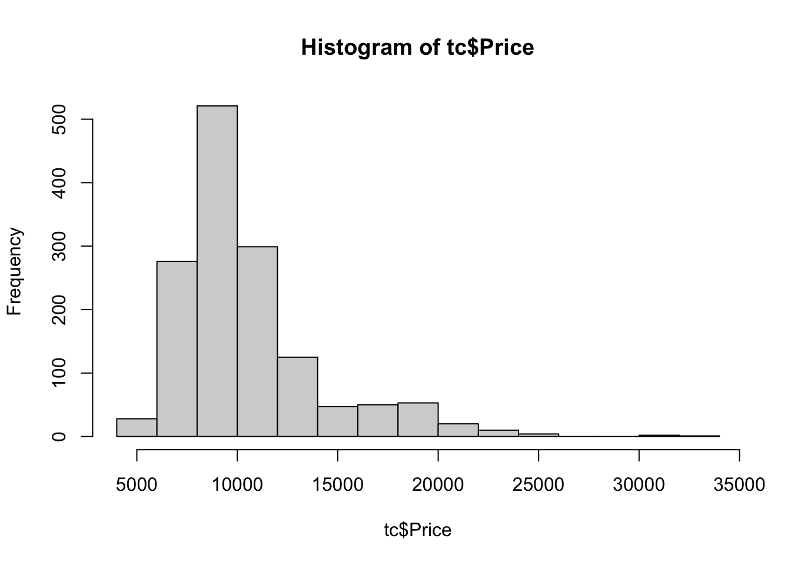
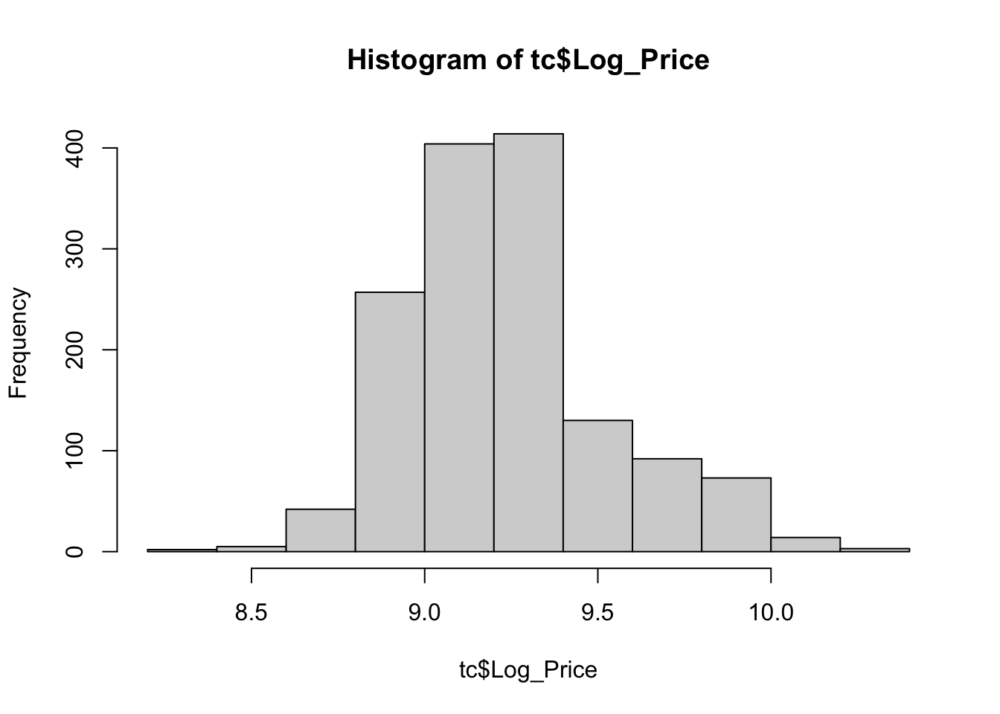
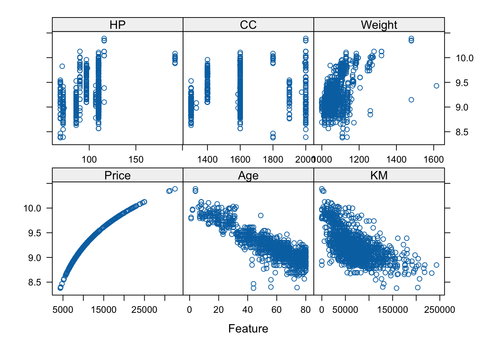
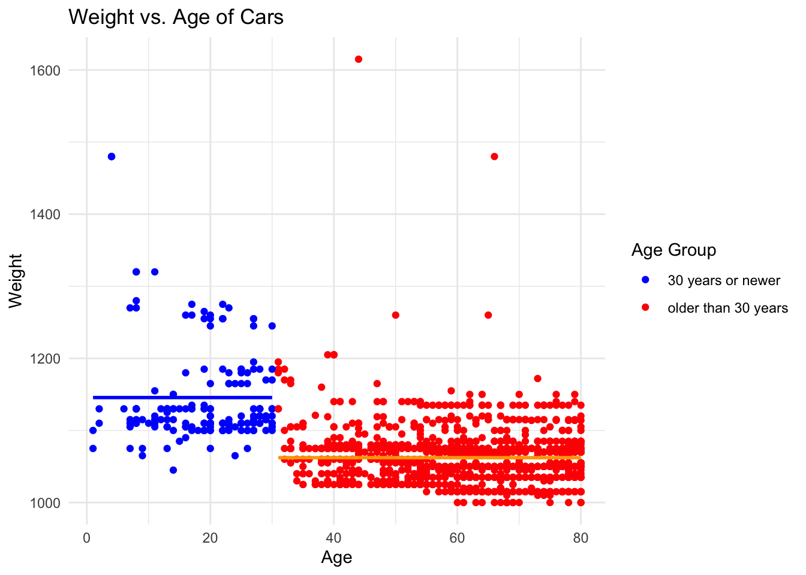
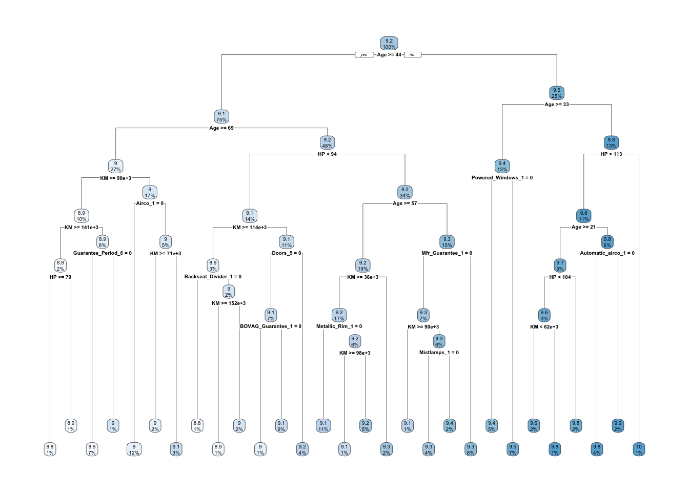
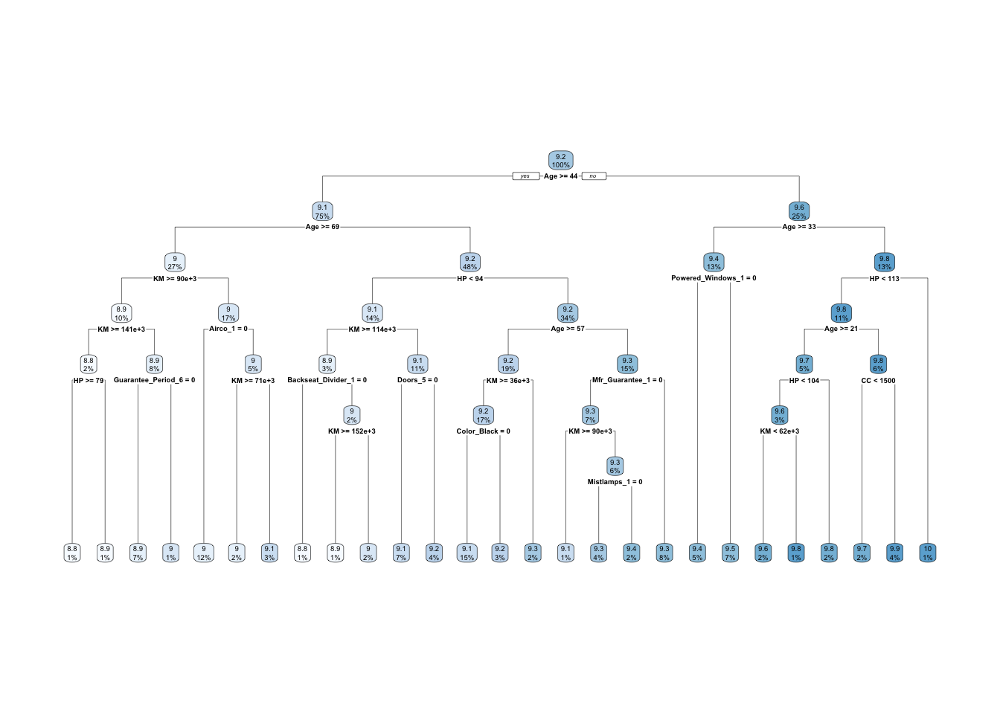

── Attaching core tidyverse packages ──────────────────────── tidyverse 2.0.0 ──
✔ dplyr 1.1.3 ✔ readr 2.1.4
✔ forcats 1.0.0 ✔ stringr 1.5.0
✔ ggplot2 3.4.3 ✔ tibble 3.2.1
✔ lubridate 1.9.2 ✔ tidyr 1.3.0
✔ purrr 1.0.2
── Conflicts ────────────────────────────────────────── tidyverse_conflicts() ──
✖ dplyr::filter() masks stats::filter()
✖ dplyr::lag() masks stats::lag()
ℹ Use the conflicted package (<http://conflicted.r-lib.org/>) to force all conflicts to become errors
library(glmnet)
Loading required package: Matrix
Attaching package: 'Matrix'
The following objects are masked from 'package:tidyr':
expand, pack, unpack
Loaded glmnet 4.1-8
library(lubridate)library(caret)
Loading required package: lattice
Attaching package: 'caret'
The following object is masked from 'package:purrr':
lift
Rows: 1436 Columns: 39
── Column specification ────────────────────────────────────────────────────────
Delimiter: ","
chr (3): Model, Fuel_Type, Color
dbl (36): Id, Price, Age_08_04, Mfg_Month, Mfg_Year, KM, HP, Met_Color, Auto...
ℹ Use `spec()` to retrieve the full column specification for this data.
ℹ Specify the column types or set `show_col_types = FALSE` to quiet this message.
2. Explore the data and determine the number of variables and the quantity of any missing values.
If values are missing, prescribe a plan to deal with the problem.
We have 1436 observations across 39 variables. There are no missing values to deal with.
3. Analyze whether the Price variable is appropriate for a linear regression model and discuss its distribution.
Are there any transformations that we might apply to the price variable?
# Price Distributionhist(tc$Price)

# Rearrange the columns to place Log_Price immediately after Pricetc <- tc %>%mutate(Log_Price =log(Price)) %>%select(1:3, Log_Price, 4:ncol(tc))hist(tc$Log_Price)

Price is definitely skewed to the right, therefore I used a log transformation. After the transformation, the distribution of price is much closer to being symmetric.
4. Is there a relationship between any of the features in the data and the Price feature?
Perform some exploratory analysis to determine some features that are related using a feature plot.
# Factor categorical variables, get rid of some unnecessary ones.tc <- tc %>%select(-Id, -Model, -Mfg_Month, -Cylinders, -Quarterly_Tax) %>%rename(Age = Age_08_04) %>%mutate(CC =if_else(CC ==16000, 2000, CC)) %>%mutate_at(vars(-one_of(c('Price','Log_Price','Age','KM','HP','CC','Weight') )), .funs = factor)
One Corolla has a 16000 CC engine, and that does not make sense. At the very least, it’s a massive outlier. I replaced this outlier with the value of 2000, which is the maximum otherwise.
# Separate predictors and responsetc_numeric <- tc[, sapply(tc, is.numeric)]x <- tc_numeric[, setdiff(names(tc_numeric), "Log_Price")]y <- tc_numeric$Log_Price# Use featurePlotcaret::featurePlot(x, y, plot ="scatter")

It appears there is a negative relationship between Age, KM andLog_Price. There may be a positive relationship between Weight and Log_Price. I speculate that Weight may be a confounding variable with other variables that increase both weight and the price of the car, such as additional safety features.
tc_temp <- tc# Add a new column to the data that categorizes cars as "30 years or newer" or "older than 30 years"tc_temp$AgeGroup <-ifelse(tc_temp$Age <=30, "30 years or newer", "older than 30 years")# Plot the Weight vs Ageggplot(tc_temp, aes(x=Age, y=Weight, color=AgeGroup)) +geom_point() +geom_smooth(data=subset(tc, Age <=30), aes(group=1), method="lm", formula=y~1, se=FALSE, linetype="solid", color="blue") +geom_smooth(data=subset(tc, Age >30), aes(group=2), method="lm", formula=y~1, se=FALSE, linetype="solid", color="orange") +labs(title="Weight vs. Age of Cars", x="Age", y="Weight") +scale_color_manual(values=c("30 years or newer"="blue", "older than 30 years"="red"), name="Age Group") +theme_minimal()

rm(tc_temp)
It is very clear based on the Weight vs. Age of Cars graph that newer cars are significantly heavier. Therefore, I am removing the weight variable and leaving age.
tc <-select(tc, -'Weight')
# Check categorical variablescategorical_list <-list()factor_cols <-names(tc)[sapply(tc, is.factor)]for(i in factor_cols) { categorical_list[[i]] <-table(tc[[i]])}# Convert all factors to dummy vars.tc_dum =dummy(tc, int =TRUE)tc_num = tc %>%keep(is.numeric)tc =bind_cols(tc_num, tc_dum)rm(tc_dum, tc_num)# remove one dummy from each categorical vartc <- tc %>%select(-Mfg_Year_1998,-Mfg_Year_1999,-Mfg_Year_2000,-Mfg_Year_2001,-Mfg_Year_2002,-Mfg_Year_2003,-Mfg_Year_2004,-Fuel_Type_CNG,-Met_Color_0,-Color_Beige,-Color_Yellow,-Color_Violet,-Automatic_0,-Doors_2,-Gears_3,-Mfr_Guarantee_0,-BOVAG_Guarantee_0,-Guarantee_Period_13,-Guarantee_Period_18,-Guarantee_Period_20,-Guarantee_Period_24,-Guarantee_Period_28,-Guarantee_Period_36,-ABS_0,-Airbag_1_0,-Airbag_2_0,-Airco_0,-Automatic_airco_0,-Boardcomputer_0,-CD_Player_0,-Central_Lock_0,-Powered_Windows_0,-Power_Steering_0,-Radio_0,-Mistlamps_0,-Sport_Model_0,-Backseat_Divider_0,-Metallic_Rim_0,-Radio_cassette_0,-Parking_Assistant_0,-Tow_Bar_0)
5. Are there any predictor variables in the data that are potentially too strongly related to each other?
Make sure to use reference any visualizations, tables, or numbers to show this.
# Compute the correlation matrixtc_minus_price <-select(tc, -"Price", -"Log_Price")cor_matrix <-cor(tc_minus_price, use ="pairwise.complete.obs")# Compute the correlation matrixcor_matrix <-cor(tc_minus_price, use="complete.obs", method="pearson")# Find pairs with correlation coefficient greater than 0.7 (in absolute value)high_cor <-which(abs(cor_matrix) >0.8& cor_matrix !=1, arr.ind =TRUE)# Extract pairs and their corresponding correlation valuesresult <-data.frame(Variable1 =rownames(cor_matrix)[high_cor[, 1]],Variable2 =rownames(cor_matrix)[high_cor[, 2]],Correlation = cor_matrix[high_cor])# remove duplicatesresult <- result[!duplicated(result$Correlation), ]print(result)
Radio_cassette_1 and Radio_1 are extremely correlated, having an r value of 0.99, therefore I am dropping Radio_1. Corollas that come with a cassette player almost always have a radio and vice versa. Similarly, we see a strong correlation of r = .88 between Powered_Windows_1 and Central_Lock_1, indicating those features typically come together. So, I am dropping Central_Lock_1 as well.
tc <-select(tc, -'Radio_1', -'Central_Lock_1')
6. Partition your data into a training set with 70% of the observations and a testing set with the remaining 30%.
# Partition the data.set.seed(1001)samp =createDataPartition(tc$Log_Price, p =0.7, list =FALSE)training = tc[samp, ]training <- (select(training, -"Price"))testing = tc[-samp, ]testing <-select(testing, -"Price")rm(samp)
7. Based on your results and relationships in questions (4) and (5), build a regression tree model to predict car prices. Make sure to conduct cross validation to evaluate the model and choose the best cost complexity parameter for this problem (use default values for minsplit, minbucket, maxdepth, etc. But choose grid of cp values to tune over). Use rpart.plot to view your tree and discuss its complexity, usefulness, etc. What role is pre-pruning and post-pruning playing here?
# Use cross-validation to determine the best cp valuecontrol <-trainControl(method ="cv", number =10) cpGrid <-expand.grid(.cp =seq(0.001, 0.05, by =0.001))trainResult <- caret::train(Log_Price ~ ., data = training, method ="rpart", trControl = control, tuneGrid = cpGrid)bestCp <- trainResult$bestTune$cpprint(bestCp)
[1] 0.001
# Train the regression tree model using the best cp valuetreeModel <-rpart(Log_Price ~ ., data = training, control =rpart.control(cp = bestCp))# Plot the treerpart.plot(treeModel)

The best cp value to use for the model is .001. The regression tree has 8 levels. Pre-pruning occurs here by choosing a larger value for cp to get a smaller tree.
8. Look at the feature importance (using permuted feature importance in “iml” package, with loss = “rmse” and compare = “ratio”) and determine which features have the biggest effect, and which might be okay to remove.
tree_predictor = iml::Predictor$new(treeModel, data = training)tree_imp = iml::FeatureImp$new(tree_predictor, loss ="rmse", compare ="ratio", n.repetitions =30)plot(tree_imp)
Age, KM, and HP are the most important features. Any features with an importance value of 1 would probably be okay to be removed.
9. Parsimony is about obtaining the simplest model possible, without oversimplifying. Remove a few of the less useful features and retrain / cross validate / tune your tree.
training_simp <-subset(training, select =-c(Tow_Bar_1, Parking_Assistant_1, Metallic_Rim_1, Boardcomputer_1, BOVAG_Guarantee_1, Automatic_airco_1)) testing_simp <-subset(testing, select =-c(Tow_Bar_1, Parking_Assistant_1, Metallic_Rim_1, Boardcomputer_1, BOVAG_Guarantee_1, Automatic_airco_1)) # Use cross-validation to determine the best cp valuecontrol <-trainControl(method ="cv", number =10) cpGrid <-expand.grid(.cp =seq(0.001, 0.05, by =0.001))trainResult <- caret::train(Log_Price ~ ., data = training_simp, method ="rpart", trControl = control, tuneGrid = cpGrid)bestCp <- trainResult$bestTune$cpprint(bestCp)
[1] 0.001
# Train the regression tree model using the best cp valuetreeModel <-rpart(Log_Price ~ ., data = training_simp, control =rpart.control(cp = bestCp))# 5. Plot the treerpart.plot(treeModel)

10. Use the model resulting from question 9 and test predictions on the testing data. Compare the cross validation error and and testing data. Spend some time interpreting what this prediction error means for your pricing model and its use for CorollaCrowd.
# Use the trained regression tree model to make predictions on the testing datapredictions <-predict(treeModel, newdata = testing_simp)# Calculate the root mean squared error (RMSE) for the testing datarmse_test <-sqrt(mean((predictions - testing_simp$Log_Price)^2))# Obtain the cross-validation error (RMSE) from the training phasermse_cv <- trainResult$results[which.min(trainResult$results$RMSE),]$RMSE# Print the resultsprint(paste("Cross-validation RMSE: ", rmse_cv))
[1] "Cross-validation RMSE: 0.121312437887304"
print(paste("Testing RMSE: ", rmse_test))
[1] "Testing RMSE: 0.125736281299052"
# Compare the errorsif (rmse_test < rmse_cv) {print("Testing error is lower than cross-validation error.")} elseif (rmse_test > rmse_cv) {print("Testing error is higher than cross-validation error.")} else {print("Testing error and cross-validation error are the same.")}
[1] "Testing error is higher than cross-validation error."
The model performed slightly worse on the testing data, but the difference isn’t substantial. For CorollaCrowd, this model could be used to estimate car value.